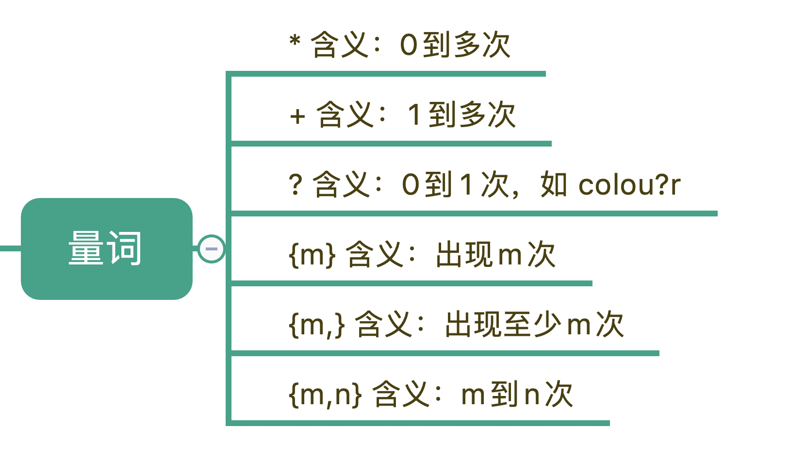
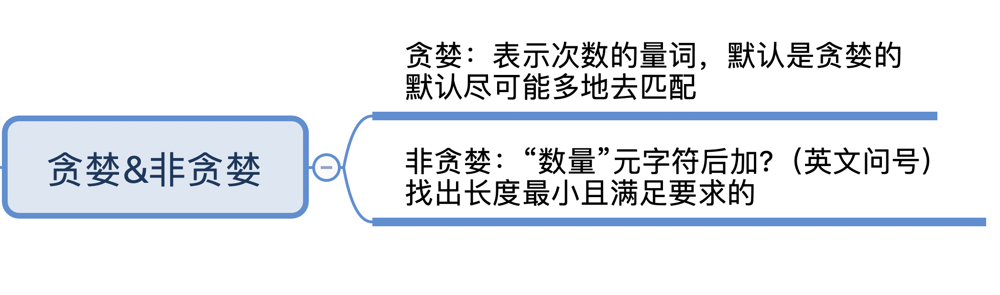

- 00 导读 余晟：我是怎么学习和使用正则的？.md.html
- 00 开篇词丨学习正则，我们到底要学什么？.md.html
- 01 元字符：如何巧妙记忆正则表达式的基本元件？.md.html
- 02丨量词与贪婪：小小的正则，也可能把CPU拖垮！.md.html
- 03 分组与引用：如何用正则实现更复杂的查找和替换操作？.md.html
- 04 匹配模式：一次性掌握正则中常见的4种匹配模式.md.html
- 05 断言：如何用断言更好地实现替换重复出现的单词？.md.html
- 06 转义：正则中转义需要注意哪些问题？.md.html
- 07 正则有哪些常见的流派及其特性？.md.html
- 08 应用1：正则如何处理 Unicode 编码的文本？.md.html
- 09 应用2：如何在编辑器中使用正则完成工作？.md.html
- 10 应用3：如何在语言中用正则让文本处理能力上一个台阶？.md.html
- 11 如何理解正则的匹配原理以及优化原则？.md.html
- 12 问题集锦：详解正则常见问题及解决方案.md.html
- 加餐 从编程语言的角度来理解正则表达式.md.html
- 结束语 使用正则提高你的人生效率.md.html
- 捐赠
02丨量词与贪婪：小小的正则，也可能把CPU拖垮！
你好，我是涂伟忠。在上一讲中，我们已经学习了正则中和一些元字符相关的内容。这一节我们讲一下正则中的三种模式，贪婪匹配、非贪婪匹配和独占模式。
这些模式会改变正则中量词的匹配行为，比如匹配一到多次；在匹配的时候，匹配长度是尽可能长还是要尽可能短呢？如果不知道贪婪和非贪婪匹配模式，我们写的正则很可能是错误的，这样匹配就达不到期望的效果了。
为什么会有贪婪与非贪婪模式？
由于本节内容和量词相关的元字符密切相关，所以我们先来回顾一下正则中表示量词的元字符。

在这6种元字符中，我们可以用 {m,n} 来表示 （*）（+）（?） 这3种元字符：
表示量词的星号（*）和 加号（+）可能没你想象的那么简单，我用一个例子给你讲解一下。我们先看一下加号（+），使用 a+ 在 aaabb 中查找，可以看到只有一个输出结果：
对应的Python代码如下：
>>> import re
>>> re.findall(r'a+', 'aaabb')
['aaa']
加号应该很容易理解，我们再使用 a* 在 aaabb 这个字符串中进行查找，这次我们看到可以找到4个匹配结果。
使用Python示例如下，我们可以看到输出结果，也是得到了4个匹配结果：
>>> import re
>>> re.findall(r'a*', 'aaabb')
['aaa', '', '', '']
但这一次的结果匹配到了三次空字符串。为什么会匹配到空字符串呢？因为星号（*）代表0到多次，匹配0次就是空字符串。到这里，你可能会有疑问，如果这样，aaa 部分应该也有空字符串，为什么没匹配上呢？
这就引入了我们今天要讲的话题，贪婪与非贪婪模式。这两种模式都必须满足匹配次数的要求才能匹配上。贪婪模式，简单说就是尽可能进行最长匹配。非贪婪模式呢，则会尽可能进行最短匹配。正是这两种模式产生了不同的匹配结果。
贪婪、非贪婪与独占模式
贪婪匹配（Greedy）
首先，我们来看一下贪婪匹配。在正则中，表示次数的量词默认是贪婪的，在贪婪模式下，会尝试尽可能最大长度去匹配。
首先，我们来看一下在字符串 aaabb 中使用正则 a* 的匹配过程。
a* 在匹配开头的 a 时，会尝试尽量匹配更多的 a，直到第一个字母 b 不满足要求为止，匹配上三个a，后面每次匹配时都得到了空字符串。
相信看到这里你也发现了，贪婪模式的特点就是尽可能进行最大长度匹配。所以要不要使用贪婪模式是根据需求场景来定的。如果我们想尽可能最短匹配呢？那就要用到非贪婪匹配模式了。
非贪婪匹配（Lazy）
那么如何将贪婪模式变成非贪婪模式呢？我们可以在量词后面加上英文的问号(?)，正则就变成了 a*?。此时的匹配结果如下：-
>>> import re
>>> re.findall(r'a*', 'aaabb') # 贪婪模式
['aaa', '', '', '']
>>> re.findall(r'a*?', 'aaabb') # 非贪婪模式
['', 'a', '', 'a', '', 'a', '', '', '']
这一次我们可以看到，这次匹配到的结果都是单个的a，就连每个a左边的空字符串也匹配上了。
到这里你可能就明白了，非贪婪模式会尽可能短地去匹配，我把这两者之间的区别写到了下面这张图中。

为了让你加深理解，我们再来看一个示例，这一次让我们查找一下引号中的单词。
从下面这个示例中，我们可以很容易看出两者对比上的差异。左右的文本是一样的，其中有两对双引号。不同之处在于，左边的示例中，不加问号时正则是贪婪匹配，匹配上了从第一个引号到最后一个引号之间的所有内容；而右边的图是非贪婪匹配，找到了符合要求的结果。
独占模式（Possessive）
不管是贪婪模式，还是非贪婪模式，都需要发生回溯才能完成相应的功能。但是在一些场景下，我们不需要回溯，匹配不上返回失败就好了，因此正则中还有另外一种模式，独占模式，它类似贪婪匹配，但匹配过程不会发生回溯，因此在一些场合下性能会更好。
你可能会问，那什么是回溯呢？我们来看一些例子，例如下面的正则：
regex = “xy{1,3}z”
text = “xyyz”
在匹配时，y{1,3}会尽可能长地去匹配，当匹配完 xyy 后，由于 y 要尽可能匹配最长，即三个，但字符串中后面是个 z 就会导致匹配不上，这时候正则就会向前回溯，吐出当前字符 z，接着用正则中的 z 去匹配。
如果我们把这个正则改成非贪婪模式，如下：
regex = “xy{1,3}?z”
text = “xyyz”
由于 y{1,3}? 代表匹配1到3个 y，尽可能少地匹配。匹配上一个 y 之后，也就是在匹配上 text 中的 xy 后，正则会使用 z 和 text 中的 xy 后面的 y 比较，发现正则 z 和 y 不匹配，这时正则就会向前回溯，重新查看 y 匹配两个的情况，匹配上正则中的 xyy，然后再用 z 去匹配 text 中的 z，匹配成功。
了解了回溯，我们再看下独占模式。
独占模式和贪婪模式很像，独占模式会尽可能多地去匹配，如果匹配失败就结束，不会进行回溯，这样的话就比较节省时间。具体的方法就是在量词后面加上加号（+）。
regex = “xy{1,3}+yz”
text = “xyyz”

需要注意的是 Python 和 Go 的标准库目前都不支持独占模式，会报错，如下所示：
>>> import re
>>> re.findall(r'xy{1,3}+yz', 'xyyz')
error: multiple repeat at position 7
报错显示，加号（+）被认为是重复次数的元字符了。如果要测试这个功能，我们可以安装 PyPI 上的 regex 模块。
注意：需要先安装 regex 模块，pip install regex
>>> import regex
>>> regex.findall(r'xy{1,3}z', 'xyyz') # 贪婪模式
['xyyz']
>>> regex.findall(r'xy{1,3}+z', 'xyyz') # 独占模式
['xyyz']
>>> regex.findall(r'xy{1,2}+yz', 'xyyz') # 独占模式
[]
你也可以使用 Java 或 Perl 等其它语言来测试独占模式，查阅相关文档，看一下你所用的语言对独占模式的支持程度。
如果你用 a{1,3}+ab 去匹配 aaab 字符串，a{1,3}+ 会把前面三个 a 都用掉，并且不会回溯，这样字符串中内容只剩下 b 了，导致正则中加号后面的 a 匹配不到符合要求的内容，匹配失败。如果是贪婪模式 a{1,3} 或非贪婪模式 a{1,3}? 都可以匹配上。
这里我简单总结一下，独占模式性能比较好，可以节约匹配的时间和CPU资源，但有些情况下并不能满足需求，要想使用这个模式还要看具体需求（比如我们接下来要讲的案例），另外还得看你当前使用的语言或库的支持程度。
正则回溯引发的血案
学习到了这里，你是不是觉得自己对贪婪模式、非贪婪模式，以及独占模式比较了解了呢？其实在使用过程中稍不留神，就容易出问题，在网上可以看到不少因为回溯引起的线上问题。
这里我们挑选一个比较出名的，是阿里技术微信公众号上的发文。Lazada卖家中心店铺名检验规则比较复杂，名称中可以出现下面这些组合：
英文字母大小写；
数字；
越南文；
一些特殊字符，如“&”，“-”，“_”等。
负责开发的小伙伴在开发过程中使用了正则来实现店铺名称校验，如下所示：
^([A-Za-z0-9._()&'\- ]|[aAàÀảẢãÃáÁạẠăĂằẰẳẲẵẴắẮặẶâÂầẦẩẨẫẪấẤậẬbBcCdDđĐeEèÈẻẺẽẼéÉẹẸêÊềỀểỂễỄếẾệỆfFgGhHiIìÌỉỈĩĨíÍịỊjJkKlLmMnNoOòÒỏỎõÕóÓọỌôÔồỒổỔỗỖốỐộỘơƠờỜởỞỡỠớỚợỢpPqQrRsStTuUùÙủỦũŨúÚụỤưƯừỪửỬữỮứỨựỰvVwWxXyYỳỲỷỶỹỸýÝỵỴzZ])+$
这个正则比较长，但很好理解，中括号里面代表多选一，我们简化一下，就成下面这样：
^([符合要求的组成1]|[符合要求的组成2])+$
脱字符（^）代表以这个正则开头，美元符号（$）代表以正则结尾，我们后面会专门进行讲解。这里可以先理解成整个店铺名称要能匹配上正则，即起到验证的作用。
你需要留意的是，正则中有个加号（+），表示前面的内容出现一到多次，进行贪婪匹配，这样会导致大量回溯，占用大量CPU资源，引发线上问题，我们只需要将贪婪模式改成独占模式就可以解决这个问题。
我之前说过，要根据具体情况来选择合适的模式，在这个例子中，匹配不上时证明店铺名不合法，不需要进行回溯，因此我们可以使用独占模式，但要注意并不是说所有的场合都可以用独占模式解决，我们要首先保证正则能满足功能需求。
仔细再看一下 这个正则，你会发现 “组成1” 和 “组成2” 部分中，A-Za-z 英文字母在两个集合里面重复出现了，这会导致回溯后的重复判断。这里要强调一下，并不是说有回溯就会导致问题，你应该尽量减少回溯后的计算量，这些在后面的原理讲解中我们会进一步学习。
另外，腾讯云技术社区也有类似的技术文章，你如果感兴趣，可以点击这里进行查看。
说到这里，你是不是想起了课程开篇里面提到的一句话：
如果你有一个问题，你想到可以用正则来解决，那么你有两个问题了。
Some people, when confronted with a problem, think “I know, I’ll use regular expressions.” Now they have two problems.
所以一个小小的正则，有些时候也可能会把CPU拖垮，这也提醒我们在写正则的时候，一定要思考下回溯问题，避免使用低效的正则，引发线上问题。
最后总结
最后我来给你总结一下：正则中量词默认是贪婪匹配，如果想要进行非贪婪匹配需要在量词后面加上问号。贪婪和非贪婪匹配都可能会进行回溯，独占模式也是进行贪婪匹配，但不进行回溯，因此在一些场景下，可以提高匹配的效率，具体能不能用独占模式需要看使用的编程语言的类库的支持情况，以及独占模式能不能满足需求。
课后思考
最后，我们来做一个小练习吧。
有一篇英文文章，里面有很多单词，单词和单词之间是用空格隔开的，在引号里面的一到多个单词表示特殊含义，即引号里面的多个单词要看成一个单词。现在你需要提取出文章中所有的单词。我们可以假设文章中除了引号没有其它的标点符号，有什么方法可以解决这个问题呢？如果用正则来解决，你能不能写出一个正则，提取出文章中所有的单词呢（不要求结果去重）？
we found “the little cat” is in the hat, we like “the little cat”
其中 the little cat 需要看成一个单词
好了，今天的课程就结束了，希望可以帮助到你，也希望你在下方的留言区和我参与讨论，并把文章分享给你的朋友或者同事，一起交流一下。
© 2019 - 2023 Liangliang Lee. Powered by gin and hexo-theme-book.